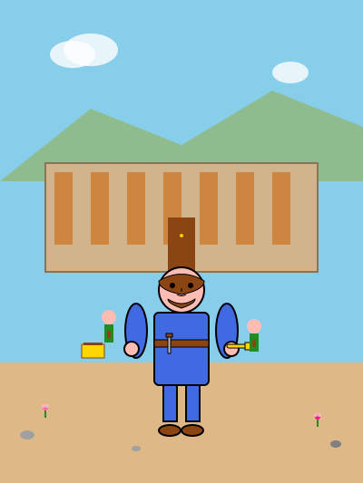

Josué fue el sucesor de Moisés como líder del pueblo de Israel. Dios le encomendó la importante misión de conquistar la Tierra Prometida. Josué era un hombre valiente y obediente que siempre confiaba en Dios.
La batalla más famosa de Josué fue la conquista de Jericó. Dios le dio instrucciones muy especiales: durante seis días, el pueblo debía caminar alrededor de la ciudad una vez al día. El séptimo día debían dar siete vueltas, y cuando sonaran las trompetas, todo el pueblo gritaría. Josué obedeció exactamente lo que Dios le mandó.
Cuando llegó el momento, las trompetas sonaron, el pueblo gritó, ¡y las murallas de Jericó se derrumbaron! Esto demostró que con Dios todo es posible. Josué conquistó muchas otras ciudades y repartió la tierra entre las doce tribus de Israel, cumpliendo así la promesa que Dios había hecho a Abraham.
